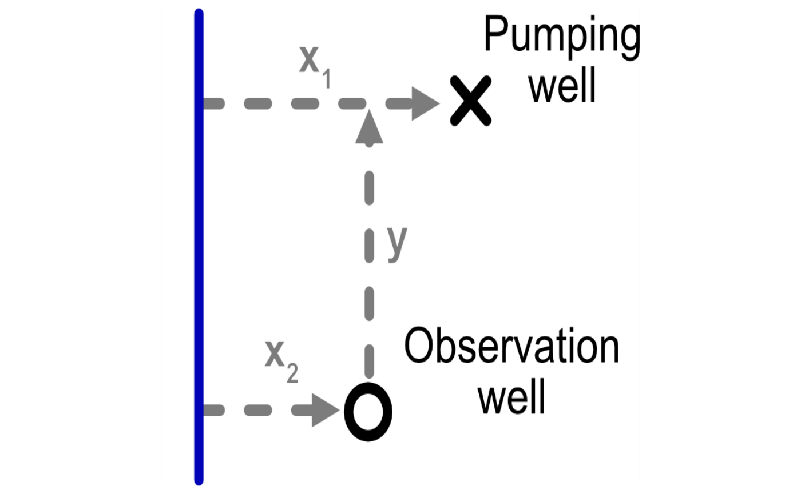
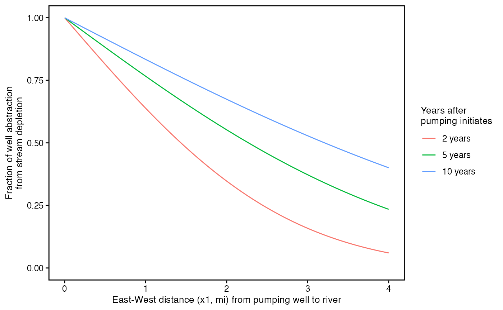
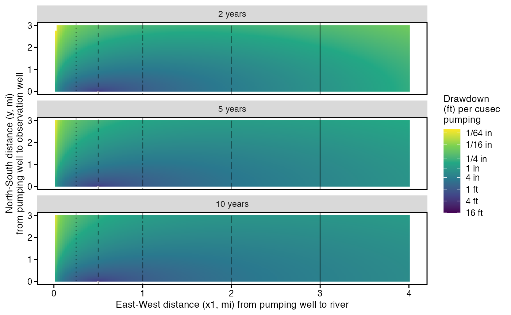
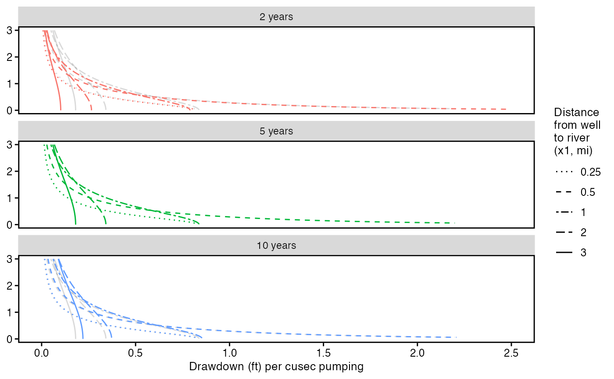
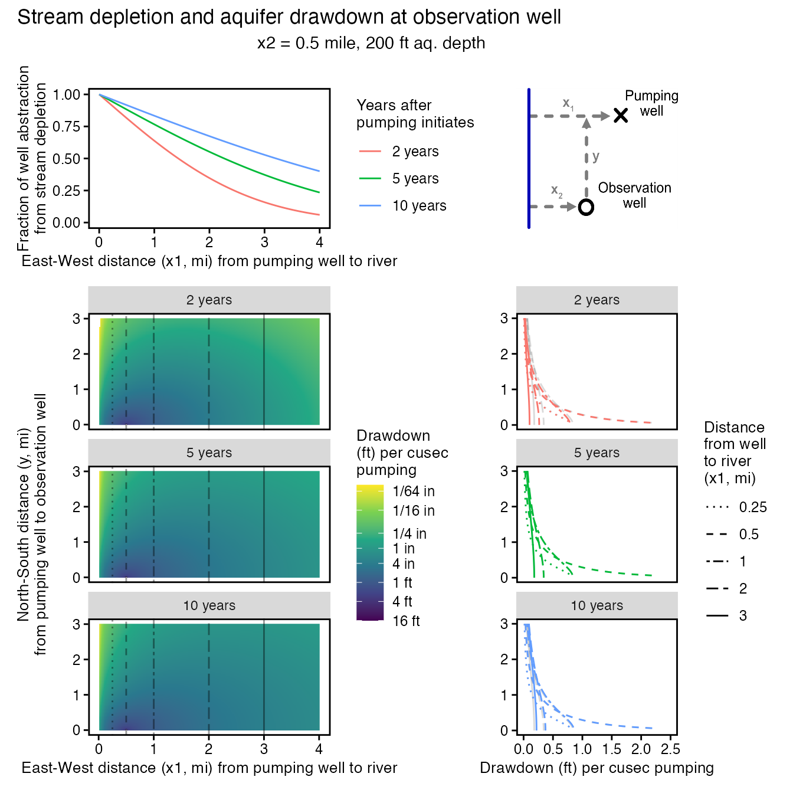

Stream-depletion-and-aquifer-drawdown.Rmd
library(isw)
#> Loading required package: expint
#> Loading required package: units
#> udunits database from /Library/Frameworks/R.framework/Versions/4.4-arm64/Resources/library/units/share/udunits/udunits2.xml
D <- set_units(200, 'ft')
K <- set_units(0.001, 'ft/sec')
V <- 0.2
df <- crossing(x1 = set_units(seq(0, 4, by = 0.02) * 5280,'ft'),
y = set_units(seq(0, 3, by = 0.02) * 5280,'ft'),
nesting(t = set_units(c(2, 5, 10),'year'), years = c(2, 5, 10))) %>%
mutate(x2 = set_units(5280/2,"ft"), K = K, D = D, V = V,
years = factor(years, levels = c(2, 5, 10), labels = paste(c(2, 5, 10), "years")))
df2 <- df %>%
mutate(well_diam = set_units(0, 'ft')) %>%
bind_cols(as_tibble(get_depletion_from_pumping(.)))
#> Warning in expint(as.numeric(rw_squared_over_4_alpha_t)): NaNs produced
theme_std <- theme(line = element_line(size = 1,
color = "black"), panel.background = element_rect(fill = "white"),
panel.border = element_rect(fill = NA, colour = "black",
size = 1), panel.grid.major = element_blank(),
panel.grid.minor = element_blank(), axis.line = element_blank(),
axis.ticks.x = element_line(colour = "black",
size = 0.5), axis.ticks.y = element_line(colour = "black",
size = 0.5), axis.ticks.length = unit(1,
"mm"), axis.text.x = element_text(size = 9,
colour = "black"), axis.text.y = element_text(size = 9,
colour = "black", hjust = 1), legend.text = element_text(size = 9,
color = "black"), axis.title.x = element_text(size = 10,
colour = "black"), axis.title.y = element_text(size = 10,
angle = 90, colour = "black"), legend.title = element_text(size = 10,
color = "black"))
#> Warning: The `size` argument of `element_line()` is deprecated as of ggplot2 3.4.0.
#> ℹ Please use the `linewidth` argument instead.
#> This warning is displayed once every 8 hours.
#> Call `lifecycle::last_lifecycle_warnings()` to see where this warning was
#> generated.
#> Warning: The `size` argument of `element_rect()` is deprecated as of ggplot2 3.4.0.
#> ℹ Please use the `linewidth` argument instead.
#> This warning is displayed once every 8 hours.
#> Call `lifecycle::last_lifecycle_warnings()` to see where this warning was
#> generated.
# df2 %>% dplyr::select(x1, y, t, s_ratio) %>% pivot_wider(names_from = "t", values_from = "s_ratio")
p_q_fraction <- ggplot(df2) +
geom_line(aes(as.numeric(x1/5280), stream_depletion_fraction, color = years)) +
labs(x = "East-West distance (x1, mi) from pumping well to river",
y = "Fraction of well abstraction\nfrom stream depletion") +
ylim(c(0, 1)) +
scale_color_discrete("Years after\npumping initiates") +
theme_std
p_q_fraction
p_drawdown <- ggplot(df2 %>% dplyr::filter(aquifer_drawdown_ratio <= set_units(-1/100/12,'s/ft^2'))) +
geom_raster(aes(as.numeric(x1/5280),as.numeric(y/5280), fill = -log(-as.numeric(aquifer_drawdown_ratio)))) +
# geom_point(data = df2 %>% dplyr::filter(s_ratio <= -1/100/12, t == t_sec*10),
# aes(x1/5280,y/5280, color = -log(-s_ratio))) +
scale_fill_viridis_c("Drawdown\n(ft) per cusec\npumping", limits = -log(c(16, 1/100/12)), breaks = -log(c(1/64/12, 1/16/12, 1/3/12, 1/12, 1/4, 1, 4, 16)), labels = c("1/64 in","1/16 in","1/4 in","1 in", "4 in", "1 ft", "4 ft", "16 ft")) +
scale_color_viridis_c("Drawdown\n(ft) per cusec\npumping", breaks = -log(c(1/64/12, 1/16/12, 1/3/12, 1/12, 1/4, 1, 4, 16)), labels = c("1/64 in","1/16 in","1/4 in","1 in", "4 in", "1 ft", "4 ft", "16 ft")) +
scale_size_continuous("Stream\ndepletion\nfraction") +
# ggtitle() +
labs(x = "East-West distance (x1, mi) from pumping well to river",
y = "North-South distance (y, mi)\nfrom pumping well to observation well") +
geom_vline(data = data.frame(x = c(0.25, 0.5, 1, 2, 3)), aes(xintercept = x, linetype = as.factor(x)), alpha = 0.4)+
scale_linetype_manual(values = c("dotted", "dashed", "twodash", "longdash", "solid")) +
guides(linetype = "none") +
facet_wrap(~years, ncol = 1) + theme_std
p_drawdown
transects_data <- df2 %>% dplyr::filter(x1 %in% (c(0.24, 0.5, 1, 2, 3)*5280))
p_drawdown_transects <- ggplot(transects_data) + #, t %in% (c(2, 5) * t_sec))) +
geom_line(data = transects_data %>% dplyr::filter(years == "5 years") %>% dplyr::select(-years),
aes(as.numeric(-aquifer_drawdown_ratio), y/5280, linetype = as.factor(x1/5280)), alpha = 0.15) +
geom_line(aes(as.numeric(-aquifer_drawdown_ratio), y/5280, color = years, linetype = as.factor(x1/5280))) +
scale_color_discrete("Years after\npumping initiates") +
scale_x_continuous("Drawdown (ft) per cusec pumping", limits = c(0, 2.5)) + facet_wrap(~years, ncol = 1) +
scale_linetype_manual("Distance\nfrom well\nto river\n(x1, mi)",values = c("dotted", "dashed", "twodash", "longdash", "solid"), labels = c(0.25, 0.5, 1, 2, 3)) +
guides(color = "none") +
theme_std %+replace% theme(axis.title.y = element_blank())
p_drawdown_transects
#> Warning: The `scale_name` argument of `continuous_scale()` is deprecated as of ggplot2
#> 3.5.0.
#> This warning is displayed once every 8 hours.
#> Call `lifecycle::last_lifecycle_warnings()` to see where this warning was
#> generated.
#> Warning: Removed 3 rows containing missing values or values outside the scale range
#> (`geom_line()`).
#> Warning: Removed 9 rows containing missing values or values outside the scale range
#> (`geom_line()`).
p_well_config <- ggplot() + annotation_custom(grid::rasterGrob(well_config_img,
width=unit(1,"npc"),
height=unit(1,"npc")),
-Inf, Inf, -Inf, Inf)
p_depletion_x <- p_q_fraction + p_well_config +
p_drawdown + p_drawdown_transects +
plot_layout(widths = c(3, 2), heights = c(1, 3)) +
plot_annotation(title = paste0("Stream depletion and aquifer drawdown at observation well"),
subtitle = paste0(paste(rep(" ",10), collapse = ""),"x2 = 0.5 mile, ",D," ft aq. depth\n"))
p_depletion_x
#> Warning: Removed 3 rows containing missing values or values outside the scale range
#> (`geom_line()`).
#> Warning: Removed 9 rows containing missing values or values outside the scale range
#> (`geom_line()`).